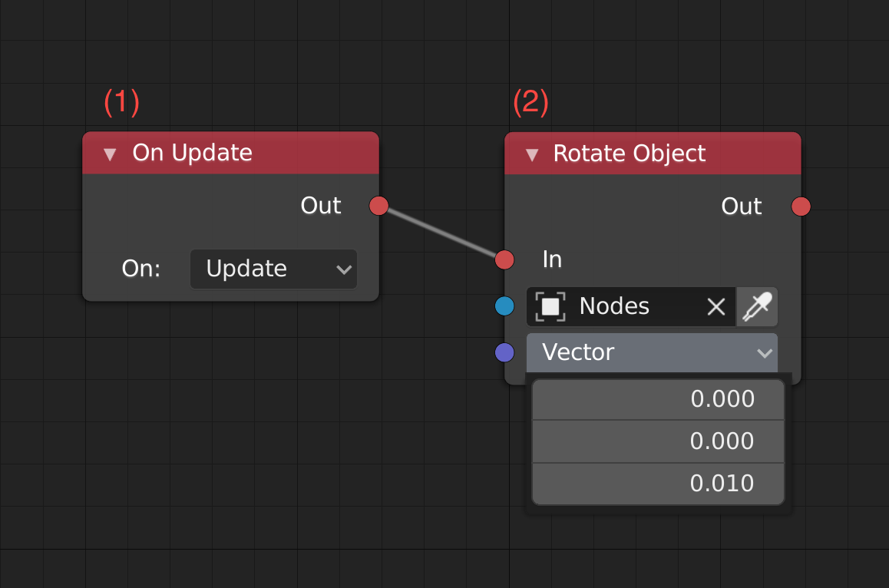
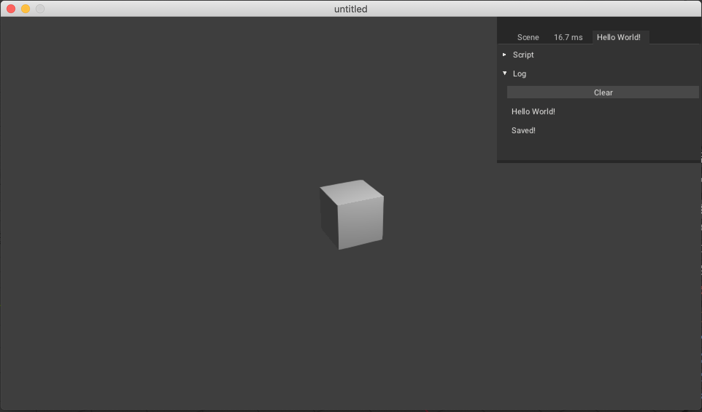
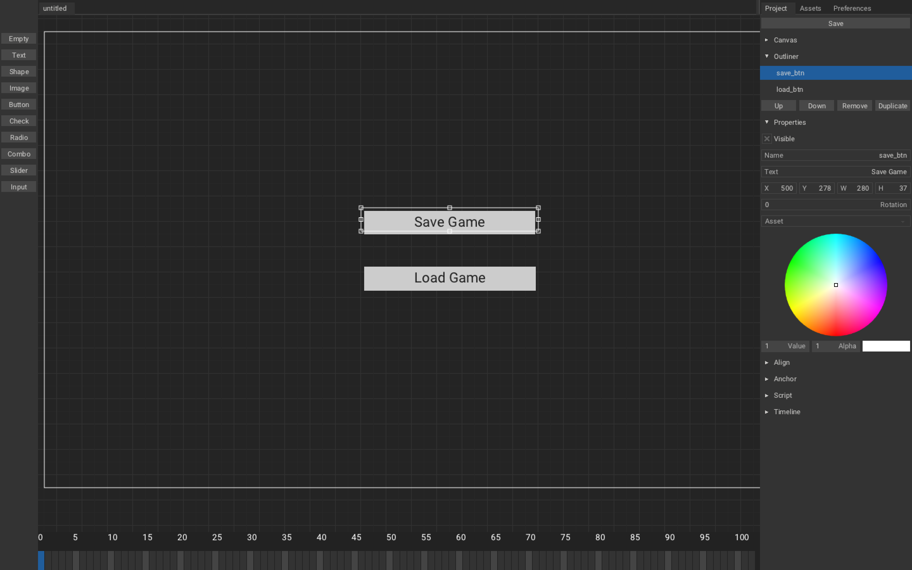
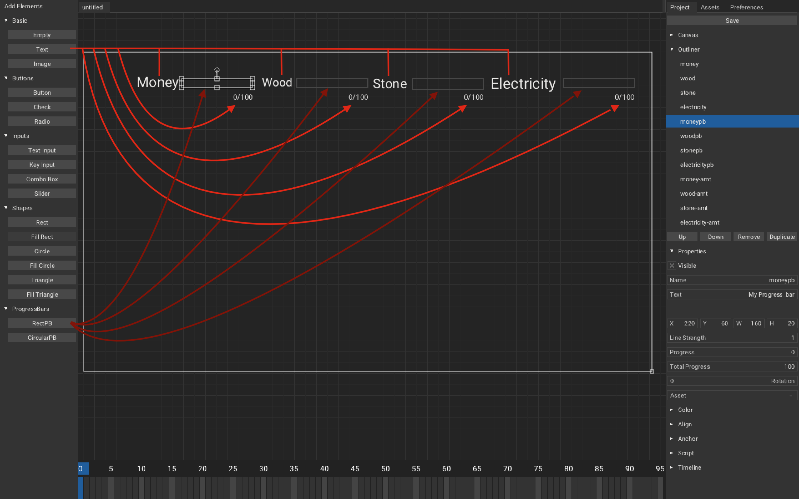

Getting Started
Introduction
ARMORY3D
Armory3D is data-driven 3D engine written in Haxe, C and WebAssembly, comes with Blender embedding but is designed to be able to be integrated into almost any 3d modelling and animation tool like Blender. It's main focus is on performance, portability and minimal footprint.
RENDERING
Armory has it own renderer (see Iron). Armory uses Cycles/EEVEE material nodes to build shaders. The renderpath is completely scriptable, with support of forward and deferred renderpath out-of-box. It is completely possible to write your own shaders(in glsl).
SCRIPTING
Scripting is done with traits(a concept developed in Iron: a piece of logic attached to an object).
There are 4 different Traits:
- LOGIC NODES TRAIT: Traits can be written with
Logic Node(similar to UE4's Blueprints) - HAXE TRAIT: Traits can be written in
Haxe. - CANVAS TRAIT: Trait for
Canvas UI - WEBASSEMBLY(WASM) TRAIT: Trait written in WebAssembly,
Rust/C/C++can be used to write logic in after compiling it to WASM.
TARGETS
Armory support all targets that Kha support. Platform such as Desktop(MacOS, Linux, Windows), HTML5, Mobile(Android, iOS) and consoles(PS4, Xbox One, Switch) is supported out-of-box.
Technologies
HAXE
HAXE is open source cross-platform toolkit based on modern, high-level, strictly typed, multi-paradigm programming language and cross-compiler that can compile code to target platform native source code or binary. Haxe is easy-to-learn if you know java/AS3 and other OOP languages.
(So basically, Haxe will cross-compile you code to many different language such as Python, C++, Java, Lua, etc., and then you run/compile this cross-compiled code. It is useful if you want to create cross-platform app/games. So, many birds with one stone.)
KHA
KHA is ultra-portable, high performance, open-source multimedia framework. It is low level SDK for building cross-platform games and media applications. With the help of Haxe Programming language and the Krafix shader-compiler it can cross-compile your code and optimize your assets. Kha gives you a common API to graphics, audio, input, and networking, for platforms such as Web, Mobile, Desktop, Consoles, etc and Graphics APIs such as Metal, Vulkan, DirectX, WebGL and OpenGL.
(So basically, Kha is SDL on steroid which you can use to create Engines/Games/Apps, it will use platform native Graphics API, in order to maximum utilise GPU, resulting in fast, light-weight product)
IRON
IRON is data-based, asynchronous engine used for building 3D tools, It is built with Kha, Haxe and WebAssembly. It is core engine of Armory but is designed to run stand-alone. Iron handles render & content pipelines and lets you develop a custom visual engine on top of it.
(So basically, Iron is an engine, you can use it with other libs such as Bullet for your need.)
Downloading the add-on
Git
Installing Armory using Git is easy task.
- Get Blender if you don't already have.
- Open Terminal/Command Prompt, locate directory where the Blender is.
- Enter following command:
git clone --recursive https://github.com/armory3d/armsdk
cd armsdk
git submodule foreach --recursive git pull origin master
- Follow
Installing the add-onsteps.
Itch.io
- Go to itch.io, and then download
ArmorySDK-20XX-XX.zip - Unpack it and place it where ever you want.
- Follow
Installing the add-onsteps.
Installing the add-on

- Open Blender, go to
Edit - Preference,Blender Preferenceshould open, clickinstall, locate the armsdk and selectarmory.pyand clickinstall Add-on from File..and save preference(Three dash icon from bottom left corner) - Restart Blender, and head back to preference and go to
Render: Armoryadd-on, and toPreferences - SDK Pathand enter the your path to armsdk, and then finally save it again. - Restart the Blender again and Armory's new UIs should be there.
Updating the add-on
- Go to Armory add-on tab and then click
Update SDK. - Open terminal/command prompt and check the progress, when it is done, it should say
Armory is successfully updated. Restart Blender. - Restart Blender
Pitfalls
I am using Blender 2.7...
Let me stop you right there, Armory now uses Blender 2.8 and support for Blender 2.7X is dropped, If you want to use Blender 2.7x, you will have to use Armory version < 0.6, you can find it [here](https://github.com/armory3d/armory/releases). So, move on like I did.
I made changes to my game. Why don’t they show up when I start the game?
Armory caches builds of the game. Sometimes you need to clean this cache, click `Clean` button next to `Play` button under `Render Tab` in `Armory Player`, or if you don't want to clean build everytime, you can entirely disable it by `Render Tab - Armory Project - Flags` and unselect `Cache Build`.
My mesh look all weird, how do I fix this?
That issue is because of triangulation bug, try clean building.
Error says that it can't find some file
Make sure your blend file isn't directly exposed to any drive and also check if your folder's name doesn't have any illegal characters.
Misconceptions
I choosed `EEVEE`/`Cycles` renderer but still get this error
It doesn't matter which renderer you select, Armory has it own renderer, and `EEVEE`/`Cycles`/`Workbench` aren't used by Armory at all.
Getting Started
THIS IS DATED! ARMORY2D HAS EVOLVED A LOT SINCE WRITING THIS!
In this tutorial, we will create canvas using Armory2D, learn about it and then add and control canvas's element using haxe.
Our Goal:
Fire up Armory3D project, once you have it up, go to Scene - Armory Scene Trait, create new Canvas Trait, name it UI and hit Edit Canvas. A window named Armory2D should pop-up:

Let study its user interface:

-
This is where you can add elements from.
-
This is
Canvas's area, where you arrange for you window. -
This is
Projecttab, where you configure you elements.Save: Saves the canvas.Canvas: Create new canvas with given name, width and height.Outliner: This is layer. You can pressUp/Downto move it up/down the layer,Removeto remove the element,Duplicate, to duplicate. (Pretty obvious)Properties: Adjust visibility, name, text, transform, color of an selected element.Align: (WIP).Anchor: Anchor element to selected side.Script: This is used to handle event.Timeline: (WIP).
-
This is
Assetstab, where you import assets in:Import Assets: Import assets using zui's file dialogue.X: Remove assets.
-
This is
Preferencestab, where you configure Armory2D:UI Scale: Scales the UI.Grid Size: Scale the grid.Grid Snap Position:Snap element to grid position.Grid Snap Bounds:Snap element to grid bounds.VSync: Enable/disable VSync.Console: (WIP).
-
This is Timeline, used to animate elements, but currently it is WIP, so we will ignore it for now.
Let add elements:

Text: Add Texttxt, We will control this by using below UI (sliders, input, etc).Sliders: Add 3 slidersslider_r,slider_g,slider_bto control rgb value of thetxt.Input: Add inputinput_txt, we will use this to controll the text oftxt.Combo: Add combo(aka dropdown), set text asDefault Case;Upper Case;Lower Case,we will use it make ourtxtcase-sensitive or not.Radio: Add radio,rotate, set text asRotate 90;Rotate 180;Rotate 0,we will use this set rotation of our text.Check: Add checkboxvisibility, we will use this to maketxtvisible/invisible.Button: Add buttonapply_btn, and setapply_btninScript - Event,we will use this to apply the change made using UI.Image: Addlogo, we use this to for image assets.Shape: Addh_1, we use this add shape.
We set text of our combo and radio as `option1;option2;option3` because it seperate options by `;`.
When you run the game, you should see something like this:

Now, we will create Haxe Trait to control our UI created in UI Canvas. Head over to Scene - Armory Scene Trait in Blender and create new Haxe Trait and name it CanvasController and hit Edit Script.
// In CanvasController.hx
package arm;
import iron.Scene;
import armory.trait.internal.CanvasScript;
import armory.system.Event;
class CanvasController extends iron.Trait {
// Initialize canvas as CanvasScript.
var canvas:CanvasScript;
public function new() {
super();
notifyOnInit(function() {
// Set canvas as CanvasScript trait from active scene.
canvas = Scene.active.getTrait(CanvasScript);
// Add event listener with string 'apply_btn' and call 'applyCanvas' function.
Event.add("apply_btn", applyCanvas);
});
}
public function applyCanvas() {
trace("Applied!");
}
}
If you were to run this and press Apply button, it should print Applied!. If it do, then our basics are working and we are ready to do more work.
Now to change color of text using slider_r/slider_g/slider_b silder and enable/disable visibility using visibility checkbox:
//In CanvasController.hx
~
import kha.Color;
import zui.Canvas.TElement;
~
class CanvasController extends iron.Trait {
var canvas:CanvasScript;
// Initialize text as TElement.
var text:TElement;
public function new() {
super();
notifyOnInit(function() {
canvas = Scene.active.getTrait(CanvasScript);
//get element from canvas with string 'txt'.
text = canvas.getElement("txt");
Event.add("apply_btn", applyCanvas);
});
}
public function applyCanvas() {
//Only call set_'s funtions when button is pressed.
set_rgb();
set_visibility();
}
public function set_rgb() {
//Get value from UI using getHandle().
var r = canvas.getHandle("slider_r").value;
var g = canvas.getHandle("slider_g").value;
var b = canvas.getHandle("slider_b").value;
//Set text color from float r,g,b.
text.color = Color.fromFloats(r, g, b);
}
public function set_visibility() {
//Get checkbox's selected bool value.
var is_selected = canvas.getHandle("visibility").selected;
// if isn't selected than keep invisible else visible.
if (!is_selected){
text.visible = false;
}else{
text.visible = true;
}
}
}
Now we will get input from input_txt and case sensitivity from dd_case and set Text txt according to it.
//In CanvasContoller.hx
~
class CanvasController extends iron.Trait {
~
public function new() { ~ }
public function applyCanvas() {
set_rgb();
set_visibility();
set_input_txt();// 4
}
public function set_rgb() { ~ }
public function set_visibility() { ~ }
public function set_input_txt() {
//Get input value.
var input_txt = canvas.getHandle("input_txt").text;
//Get selected value from drop down with position.
var caseSensitivity = canvas.getHandle("dd_case").position;
// 3
if (caseSensitivity == 1){
text.text = input_txt.toUpperCase();
}else if (caseSensitivity == 2){
text.text = input_txt.toLowerCase();
}else{
text.text = input_txt;
}
}
}
And lastly rotation of Text txt using Radio visibility:
~
class CanvasController extends iron.Trait {
~
public function new() { ~ }
public function applyCanvas() {
~
set_rotation();
}
public function set_rgb() { ~ }
public function set_visibility() { ~ }
public function set_input_txt() { ~ }
public function set_rotation(){
//Just like dropdown's case use position to get selected value.
var rotate = canvas.getHandle("rotate").position;
//Set text's rotation according to selected radio's value.
if (rotate == 0){
text.rotation = 0;
}else if (rotate == 1){
text.rotation = 90 * 3.14 / 180;
}else if (rotate == 2){
text.rotation = 180 * 3.14 / 180;
}
}
}
Armory uses radians almost everywhere so be sure to convert it to degrees.
Now on playing it, you should get our goal.
🎉There we go, our tutorial is finished 🎉
If anything goes wrong, then you can check the source code
Navmesh (Video)
A beginner level tutorial on the NavMesh functionality in the Armory3d engine.
In this navmesh video tutorial, Samuel Moxham (Smxham) will re-create Pac-Man while showing how to use navmash for this purpose.
Tilesheet (Video)
In this tilesheet video tutorial, Samuel Moxham (Smxham) will cover following:
- Demo of what is currently possible with
tilesheets. - Software example to make your own sprite sheet.
- How to make explosion effect in Armory3D using
tilesheets. - Applying
tilesheetsin game scenario.
Tilesheet Samuel Moxham uses in his tutorial -> Conceret_Impact, Explosion
{kind=link}
{kind=link}
If anything goes wrong, then you can check the source code
Traits
In this tutorial, we will learn about what is Traits, what are different types, how to create them and rotate different cube from different traits.
Goal:
Trait is conecpt in Iron means a piece of logic attached to object or scene.
There are 4 different types of traits:
-
Haxe Trait: Haxe Text-based scripting trait that can be used to write game-play logic in.
-
Logic Nodes Trait: Visual scripting trait for writing game-play logic in. It is similar to UE4's Blueprints.
-
Canvas Trait: Trait for UI, canvas can be made using Armory2D, but since it use
Json, you can create layout yourself withoutArmory2D. -
WebAssembly(WASM): WebAssembly can also be used as scripting trait, It can be written in
Rust/C/C++and than complied toWASMto use it in Armory (WASM will only work with Krom target). WASM is very useful when it comes to plugins, you can use Libraries made inRust/C/C++and compile it to WASM and then use it inArmoryandKha. Two examples that are used inArmorPaint: Texture-synthesis(Rust), Chips(C).
Let's get started, fire up armory3D project. We will create Trait in following order:
Haxe
Create a cube, name it Haxe and place it wherever you want. Select it and go to Scene - Armory Scene Trait.
- Click
+, selectHaxeand clickOK,Haxetrait placeholder should appear. - Click
New Scriptand name the script of your choice, just make sure the first letter is capital(HaxeScriptfor me). - Finally hit
Edit Script, you system default IDE should now open up with the project.
Edit the script:
// In HaxeScript.hx
package arm;
//Imports
import iron.object.Object;
import iron.math.Vec4;
import iron.Scene;
class HaxeScript extends iron.Trait {
//Initialise haxeCube as Object
var haxeCube:Object;
public function new() {
super();
//NotifyOnInit function get excuted when the 'trait' is initiated.
notifyOnInit(function() {
//Get haxeCube Object from active Scene.
haxeCube = Scene.active.getChild("Haxe");
});
//NotifyOnUpdate function get excuted every frame.
notifyOnUpdate(function() {
//Rotate haxeCube with Vec4(x, y, z) and speed.
haxeCube.transform.rotate(new Vec4(0.0, 0.0, 1.0), 0.01);
});
}
}
Now, if you were to play it, you should see Haxe cube rotating!.
Logic Node
Create a cube, name it Nodes and place it wherever you want. Select it and go to Scene - Armory Scene Trait.
- Click
+, selectNodesand clickOK,Nodestrait placeholder should appear. - Change your editor type to
Logic Node Editorand click+New. - A node tree should be created, you can rename it by editing the text field(
LogicNodesfor me). - Go back to
Scene - Armory Scene trait, select you logic nodes place holder and clickTree, selectLogicNodesin dropdown.
and now add following nodes(Shift + A):

- On Update: It is triggered every tick.
- Rotate object on axis, speed is set directly in vector.
Now if you play it, Nodes cube should start spinnig.
Wasm
Create a cube, name it Wasm and place it wherever you want. Select it and go to Scene - Armory Scene Trait.
- Click
+, selectWasmand clickOK,Wasmtrait placeholder should appear. - Click
New Module, and it should re-direct you to WebAssembly Studio, selectEmpty Rust Project(you can select c/c++ too) and clickCreate. - Enter
Rust/C/C++code and clickBuildand there should bemain.wasminoutfolder, right-click and download it. - Put outputed
main.wasminBundledfolder (create one, if there is no bundled folder). - Go back to
Scene - Armory Scene Trait, select previously createdWasmplaceholder, clickRefreshand selectmaininModuledropdown.
// Rust example of rotating cube
// main.rs
extern {
fn notify_on_update(f: extern fn() -> ()) -> ();
fn get_object(name: *const i8) -> i32;
fn set_transform(object: i32, x: f32, y: f32, z: f32, rx: f32, ry: f32, rz: f32, sx: f32, sy: f32, sz: f32) -> ();
}
#[no_mangle]
pub extern "C" fn update() -> () {
unsafe {
let name = std::ffi::CString::new("Wasm").unwrap();
let object = get_object(name.as_ptr());
static mut rot: f32 = 0.1;
rot += 0.01;
set_transform(object, 0.0, 0.0, 0.0, 0.0, 0.0, rot, 0.5, 0.5, 0.5);
}
}
#[no_mangle]
pub extern "C" fn main() -> i32 {
unsafe {
notify_on_update(update);
}
return 0;
}
Now if you play it then you should have spinny rusty wasm cube.
Canvas
- Click
+, selectUIand clickOK,Canvastrait placeholder should appear. - Click
New Canvasand enter the name and clickEdit Canvas. - Add
Textelement and set text asHello World from Canvas!and save it.
If you play it now, you should see Hello World from Canvas.
Check Canvas tutorial for more!
🎉There we go! We covered the basics of Traits!🎉
If anything goes wrong, then you can check the source code
Getting Started
Introduction
Save/load is one of the most important feature in game, whether it is single-player or multi-player game. In case of single-player, the game data can be saved to local drive, with encryption so that cheating is not made easy. On other hand, in multi-players game, game data is saved on the server hosted by the game development group.
Ever wondered how this is generally done? Well, Saving and loading mechanism can be done by simply writing data into file and reading from it. Json and Xml file formats are popularly used for this purpose for small game. In commercial games, things such as file size, encryption, etc. need to be taken care of, but for this tutorial we will just be exporting and reading from json. I will leave other stuffs up to you.
This tutorial is divided into 3 parts:
- We will look into writing and reading file in-game.
- Add saving and loading cube's properties.
- UI for saving and loading the game.
At the end, we get:
If anything goes wrong, then you can check the source code
Part-1
We will implement basics of file reading and writing for Krom platform. For now, create Bundled folder in root directory, Armory uses this folder to store and read files such as canvas's json.
- Create a Haxe trait
SaveLoadMechanism, we will put everything here.
SaveLoadMechanism.hx
package arm;
class SaveLoadMechanism extends iron.Trait {
public function new() {
super();
notifyOnInit(function() {
//Only compile the code for krom platform
#if kha_krom
//Set json structure with text as 'hello World!'
var saveData = { text: "Hello World!" };
//Converts above structure to json string.
var saveDataJSON = haxe.Json.stringify(saveData);
//Get Krom's location path and add path for save_game.json.
var path = Krom.getFilesLocation() + "/save_game.json";
//Write json string to bytes.
var bytes = haxe.io.Bytes.ofString(saveDataJSON);
//Save to file from path specified above with data from bytes.
Krom.fileSaveBytes(path, bytes.getData());
#end
});
}
}
Code Explanation
#if some_conditionis called Conditional Compiling expression, here, our code will only be compiled to Krom platform.- We define structure and convert the structure into json.
- We get Krom's file location (during playing from armory, krom's file location is
root_folder/build_file/debug/krom/save_game.json) and append oursave_game.jsonto the path. - Convert our stringy json to bytes.
- Save data from bytes to path specified.
If you play and open root_folder/build_file/debug/krom/ you should find save_game.json and it should have your saved content. To save it to Bundled folder that we previously create and to add keyboard input code to save manually instead of saving when the game initiate.
SaveLoadMechanism.hx
package arm;
import iron.system.Input;
class SaveLoadMechanism extends iron.Trait {
//Get keyboard's input.
var kb = Input.getKeyboard();
public function new() {
super();
notifyOnUpdate(function() {
if(kb.started("f")){
save();
}
});
}
public function save(){
~
var saveDataJSON = haxe.Json.stringify(saveData);
// Move out of 3 dirs
var path = Krom.getFilesLocation() + "/../../../" + "/Bundled/save_game.json";
var bytes = haxe.io.Bytes.ofString(saveDataJSON);
~
#end
}
}
Code Explanation
- On every tick, check if key
fis pressed, than callsave() - We add
/../../../before path to move out of three directory.

We need to read from file in order to load its contents.
SaveLoadMechanism
package arm;
import iron.system.Input;
import iron.data.Data;
class SaveLoadMechanism extends iron.Trait {
var kb = Input.getKeyboard();
var saveFile = "save_game.json";
public function new() {
super();
notifyOnUpdate(function() {
if(kb.started("f")){
save();
}else if(kb.started("g")){
load();
}
});
}
public function save() { ~ }
public function load(){
//Get Blob, from `Bundled`
Data.getBlob(saveFile, function(bytes:kha.Blob) {
//Converts bytes to string.
var jsonString = bytes.toString();
//Parse value from stringy json.
var json = haxe.Json.parse(jsonString);
trace(json.text);
});
}
}
Code Explanation
- Check if
f,gis pressed and then callsave(),load()respectively. - Load blob from path specified.
- Convert the file to string and then parse json from it.
Hit Play, try pressing f and then g, Hello World! should appear in debug console, if it do than that means saving and loading works 👌

Part-2
We can read and write from/to file. And now we will read and write our lovely default cube's properties, let just create a trait CubeController to simply rotate and move cube to demonstrate saving and loading.
// In CubeController.hx
package arm;
import iron.math.Vec4;
import iron.system.Input;
class CubeController extends iron.Trait {
var kb = Input.getKeyboard();
public function new() {
super();
notifyOnUpdate(function() {
//Translates (x, y, z) object with according to the key press.
if(kb.down("up")) object.transform.translate(-0.2, 0.0, 0.0);
else if (kb.down("down")) object.transform.translate(0.2, 0.0, 0.0);
else if (kb.down("left")) object.transform.translate(0.0, -0.2, 0.0);
else if (kb.down("right")) object.transform.translate(0.0, 0.2, 0.0);
//Rotate randomly with 0.1 speed.
else if (kb.down("r")) object.transform.rotate(new Vec4(Math.random(), Math.random(), Math.random()), 0.1);
});
}
}
This should give you following result:
We use typedef structure to have it hold some of the cube's properties, and use this structure to save/load to json.
// In SaveLoadMechanism.hx
package arm;
import iron.Scene;
import iron.math.Vec4;
import iron.system.Input;
import iron.data.Data;
//Define Anonymous Structure with Vec4 location and rotation.
typedef Cube = { loc : Vec4, rot : Vec4 }
class SaveLoadMechanism extends iron.Trait {
var kb = Input.getKeyboard();
var saveFile = "save_game.json";
public function new() {
super();
notifyOnUpdate(function() {
if(kb.started("f")){
save();
}else if(kb.started("g")){
load();
}
});
}
public function save(){
//Get 'Cube' from active Scene.
var cube = Scene.active.getChild("Cube");
//Get cube's location.
var cubeLoc = cube.transform.loc;
//Get cube's rotation.
var cubeRot = new Vec4(cube.transform.rot.x, cube.transform.rot.y, cube.transform.rot.z);
#if kha_krom
//Set cube's loc and rot to anonymous structure defined above.
var saveData: Cube = {loc: cubeLoc, rot: cubeRot};
// Convert saveData to string.
var saveDataJSON = haxe.Json.stringify(saveData);
var path = Krom.getFilesLocation() + "/../../../" + "/Bundled/save_game.json";
// Get bytes of string
var bytes = haxe.io.Bytes.ofString(saveDataJSON);
// Save bytes's data to file
Krom.fileSaveBytes(path, bytes.getData());
trace("Saved!");
#end
}
public function load() {
var cube = Scene.active.getChild("Cube");
// Loads blob from `Bundled` folder
Data.getBlob(saveFile, function(b:kha.Blob) {
var string = b.toString();
var json = haxe.Json.parse(string);
//Set cube's location and rotation.
cube.transform.loc = json.loc;
cube.transform.setRotation(json.rot.x, json.rot.y, json.rot.z);
//builds matrix (kind of like applying changes).
cube.transform.buildMatrix();
});
}
}
For now, we will have to reopen the game to let game parse newly overwritten game_save.json.
You should get this as result:
If it work for you, then congrats! 🎉
Part-2
Using keyboard to save and load game doesn't make sense, so we will add some buttons to do the work instead. Create a new scene Canvas trait SaveLoad and add following elements and set their event as 'save_btn' and 'load_btn':

and if you play it, you should get something like this:

Now to make button click, open SaveLoadMechanism.hx.
// In SaveLoadMechanism.hx
package arm;
import armory.system.Event;
import iron.Scene;
~
class SaveLoadMechanism extends iron.Trait {
~
public function new() {
super();
notifyOnInit(function(){
//Add event listener with string defined in Armory2D.
Event.add("save_btn", save);
Event.add("load_btn", load);
});
}
~
For our last and final feature, we are going to hide buttons on start and then we will able to show and hide them with m.
// In SaveLoadMechanism.hx
~
import armory.trait.internal.CanvasScript;// 1
typedef Cube = { loc : Vec4, rot : Vec4 }
class SaveLoadMechanism extends iron.Trait {
~
var canvas:CanvasScript;
var isButtonsHidden:Bool;
public function new() {
super();
notifyOnInit(function(){
//Get CanvasScript trait from active scene.
canvas = Scene.active.getTrait(CanvasScript);
hideButtons();
isButtonsHidden = true;
~
});
notifyOnUpdate(function (){
if (kb.started("m")){
if (isButtonsHidden){
showButtons();
}else{
hideButtons();
}
}
});
}
public function save() { ~ }
public function load() { ~ }
public function hideButtons() {
//Set Element visible property to false to hide the element
canvas.getElement("save_btn").visible = false;
canvas.getElement("load_btn").visible = false;
isButtonsHidden = true;
}
public function showButtons() {
//Set Element visible property to true to show the element
canvas.getElement("save_btn").visible = true;
canvas.getElement("load_btn").visible = true;
isButtonsHidden = false;
}
}
You should get the following result:
🎉There we go! Save and Load mechanism tutorial is over!🎉
For further improving, you can:
- Encrypt the file, so that people don't cheat.
- Add more value for it to save.
- Make GTA XII
Getting Started
Introduction
City Building Simulator (CBS) game, is a genre of simulation based video-games, where player act as the leader of city they are building. It is usually top-down game, where player choose buildings placements and other city management features to develop the city accordingly.
CONCEPT
-
Art type: Voxels (those blocky things)
-
Goal: Your goal is to keep your citizens happy, go below the line of happiness, and you lose.
-
How this game work:
- You start playing the game with happiness at half.
- Building such as Housing, Amusement park, small gardens, sports court increases happiness.
- Building such as Sawmills, quarry, steelworks, powerplants increases pollution bar.
- Pollution degrades parks, gardens, etc, and this make people unhappy.
- You have to pay to maintain this parks, gardens, etc.
-
Building stuffs:
| Buildings | Costs | Produce |
|---|---|---|
| House | Woods, Stones, Steel, Electricity | Money, Happiness |
| Parks | Woods, Stones, Steel, Electricity | Money, Happiness |
| Garden | Woods, Stones, Steel | Happiness |
| Sports court | Woods, Stones, Steel | Happiness |
| Sawmills | Money, Electricity | Woods, Pollution |
| Quarry | Money, Electricity | Stones, Pollution |
| Steelworks | Money, Electricity | Steel, Pollution |
| Powerplants | Money | Electricity, Pollution |
- Features:
| In-game Feature | Tutorial's feature |
|---|---|
| Game can be saved/loaded locally | Extend upon save/load tutorial and add little encryption feature like, Caesar chiper |
| Spawning, removing, selecting moving of building | Will uses physics and raycasting stuffs |
| Layout Editing | Handling of different scenes |
| Settings | Handling of screen size, graphics, etc. with UI |
A quick overview of this tutorial:
Basic: we will implement basics of our city building game such as placing, moving, etc with player interaction.
Now before we go, make sure to start up armory and run it, to make sure everything is working correctly.
Keep in mind that this tutorial is not fully done, this tutorial will change from time to time.
Basics
In Basics part we will establish basics of city buildings, such as placing, moving, etc of buildings with player interaction.
Table of contents:
ARCBALL CAMERA
To view around our scene's environment, we will use arcball camera rotation. Now, arcball rotation is rotation of an object around a point. We will arcball rotate the camera when right mouse button is pressed and hold and use mouse wheel to zoom in and out.
To do so:
- Create an empty
CameraEmptyand position it to center of world and then set parent of our camera to this empty. - Create new haxe trait
CameraControllerand assign it to our camera, we will use this to control behavior of our camera.
CameraController.hx
package arm;
import iron.Scene;
import iron.system.Input;
import iron.math.Vec4;
class CameraController extends iron.Trait {
//Get our CameraEmpty
var cameraEmpty = Scene.active.getEmpty("CameraEmpty").transform;
//Get mouse
var mouse = Input.getMouse();
@prop
var viewMin = 1.0;
@prop
var viewMax = 2.8;
public function new() {
super();
notifyOnUpdate(update);
}
function update() {
if(mouse.down("right")){
// Rotate our empty on z-axis in opposite direction of our mouse-x movement.
// Mouse movement is divided by 200 to slow the rotation.
cameraEmpty.rotate(new Vec4(0, 0, 1), -mouse.movementX / 200);
cameraEmpty.buildMatrix();
cameraEmpty.rotate(object.transform.world.right(), -mouse.movementY / 200);
cameraEmpty.buildMatrix();
}
if (mouse.wheelDelta != 0){
//Add mouse wheel delta to cameraEmpty scale
cameraEmpty.scale.add(new Vec4(mouse.wheelDelta/30, mouse.wheelDelta/30, mouse.wheelDelta/30));
//Clamp the scale
cameraEmpty.scale.clamp(viewMin, viewMax);
cameraEmpty.buildMatrix();
}
}
}
Code Explanation
@prop, is used for variable that need configuration, if you refresh script than you can edit this variable straight from blender.- We get empty's transform and and set it z-axis rotation to reverse of our mouse moment on x-axis and slow it down by 200, and then
buildMatrix(). - We rotate our empty again but on object's right location in world-space and with our mouse's moment on y-axis and again call
buildMatrix(). - If mouse's wheel is moving, than add mouse's wheel delta to cameraEmpty's scale and slow it down by 30, thus adding zoom in and out.
- Clamp the scale between viewMin and viewMax, so that camera can't zoom in and out more.
You should get this:
BUILDINGS
To manage our city, we will need to spawn, move, remove, rotate our buildings.
-
Create a cube
hs(stand for house), we will use this for assets, it will do nothing else of sort. -
Create a plane
bld_1(we will use numbers for types), and makehsas child to this plane, we will use this as base, and for interaction. Set its physics as:- Physics type -> RigidBody
- RigidBody Type -> Passive
- Setting -> Animated
- Collision shape -> Box
- Collision Collection -> 2nd Group
- Collision Filter mask -> 2nd Group
-
Set plane (ground) physics as:
- Physics type -> RigidBody
- RigidBody Type -> Passive
- Collision shape -> Box
Collision filter mask will make ray-cast ignore the object.
- Create new Haxe trait
BuildingControllerand assign it to scene.
SELECTING AND UNSELECTING
We will interact with our building by selecting, unselecting building. To do so, We will physics ray-cast to group 2(groups of buildings) and check if it hit any of our building, if it do than set selected building to this.
BuildingController.hx
import armory.trait.physics.PhysicsWorld;
import iron.Scene;
import iron.math.Vec4;
import iron.math.RayCaster;
import iron.system.Input;
//Define structure of building
typedef Building = {
name: String,
type: Int
}
class BuildingController extends iron.Trait {
//Declare selectedBuilding, i.e., name of building currently selected.
public static var selectedBuilding:Building = null;
//Whether any building is selected or not
public static var isBuildingSelected = false;
public function new() {
super();
}
public static function raySelectBuilding() {
//Get rigid body from raycast from group 2.
var rigidbody = getRaycast(2).rigidbody;
//Check if rigidbody isn't null and rigidbody's name start with "bld"
if(rigidbody != null && StringTools.startsWith(rigidbody.object.name, "bld")){
//Set selected building to hit rigidbody name
selectedBuilding = getBuildingFromString(rigidbody.object.name);
isBuildingSelected = true;
}else {
selectedBuilding = null;
isBuildingSelected = false;
}
}
static function getRaycast(group:Int){
var physics = PhysicsWorld.active;
var mouse = Input.getMouse();
var start = new Vec4();
var end = new Vec4();
var camera = Scene.active.getCamera("Camera");
// Get Ray-cast direction from start to end with mouse's x, y and camera
RayCaster.getDirection(start, end, mouse.x, mouse.y, camera);
// cast ray from camera's location in world space to end vec and get hit result.
var hit = physics.rayCast(camera.transform.world.getLoc(), end, group);
var rigidbody = (hit != null) ? hit.rb : null;
//wrap rigidbody and hit result and return it.
return{
rigidbody: rigidbody,
hit: hit
};
}
static function getBuildingFromString(name: String):Building {
var building:Building = null;
for(i in buildings){
if (i.name == name) building = i;
}
return building;
}
}
Code Explanation
-
We define data structure of our building, that is its name and it type, with this it will be a lot easier to manage buildings(add, remove, etc).
-
We create
getBuildingFromString(*name*), we loop through all building and check if name match building's name, if so, return the building object. -
We create
getRaycast(*group*)specially, as we don't want to repeat this function during selecting and moving of building. This will ray-cast for specific group from camera to mouse's x/y location in world space, and get hit and rigidbody. -
We create
raySelectBuilding(), which will be use to ofc selected building, we will do so why using our getRaycast() and get rigidbody of hit object, if this rigidbody's name start with 'bld' then set selectedBuilding to this rigidbody name and set isBuildingSelected to true else, null and false.
MOVING
We will want to move building across ground to be able to place it wherever we like. For doing that, we will physics ray-cast to group 1 and check if it hit plane, if it do than update building position to ray's hit location every frame.
BuildingController.hx
~
typedef Building = { ~ }
class BuildingController extends iron.Trait {
~
//Should building move
public static var buildingMove = false;
public static function new() { ~ }
public static function raySelectBuilding() { ~ }
public static function moveBuilding() {
var raycast = getRaycast(1);
if(raycast.rigidbody != null && raycast.rigidbody.object.name == "Ground") {
//Set loc of selected building as floor of ray hit position's x, y and z as 0.4.
Scene.active.getChild(selectedBuilding.name).transform.loc.set(Math.floor(raycast.hit.pos.x), Math.floor(raycast.hit.pos.y), 0.2);
}
}
static function getRaycast(group:Int){ ~ }
static function getBuildingFromString(name: String):Building { ~ }
}
Code Explanation
- We then create
moveBuilding(), to drag building around, we can do so, by ray-casting(getRaycast()) and get hit location and update building location each frame, we will floor the hit location for grid-snapping effect and set building's z-axis location to 0 as we don't want building to be higher or lower.
PLACING AND REMOVING
To be able to place building, we will first unselect any selected building, spawn new building and set selected building to new spawned one. To place it we will simply unselect our selected building. To remove building, we will select the building, than remove the building and then unselect building.
BuildingController.hx
import iron.object.Object;
~
typedef Building = { ~ }
class BuildingController extends iron.Trait {
~
//Declare arrays of buildings
public static var buildings: Array<Building> = [];
//Building's Id, eg: bld_hs1, bld_pw2, etc.
public static var buildingId = 0;
public function new() { ~ }
public static function raySelectBuilding() { ~ }
public static function moveBuilding() { ~ }
public static function selectBuilding(name: String) {
selectedBuilding = getBuildingFromString(name);
isBuildingSelected = true;
buildingMove = true;
}
public static function unselectBuilding() {
selectedBuilding = null;
isBuildingSelected = false;
buildingMove = false;
}
public static function spawnBuilding(type: Int) {
unselectBuilding();
//Spawn object with name = "bld_"+type
Scene.active.spawnObject("bld_"+type, null, function(bld: Object){
//Increment buildingID
buildingId++;
//Change name
bld.name = "bld_"+type+"_"+buildingId;
//Add new building to add with name and type
buildings.push({
name: "bld_"+type+"_"+buildingId,
type: type
});
selectBuilding(bld.name);
});
}
public static function removeBuilding() {
//Remove Selected building
Scene.active.getChild(selectedBuilding.name).remove();
//Remove selected building from buildings array
removefromArray(selectedBuilding.name, buildings);
//Unselect building
unselectBuilding();
}
static function getRaycast(group:Int){ ~ }
static function getBuildingFromString(name: String):Building { ~ }
static function removefromArray(name: String, buildings: Array<Building>){
//Define building and set it to null
var building:Building = null;
//loop through buildings array
for (i in buildings){
//if building's name match, with name parameter
if (i.name == name){
//Set above declared building to this
building = i;
}
}
//Get index of building in buildings array
var index = buildings.indexOf(building);
//If it exist(doesn't exist = -1)
if (index > -1){
//remove building from array from index and length
buildings.splice(index, 1);
}
}
}
Code Explanation
-
We creates
selectBuilding(*name*)and we do so by setting selectedBuilding to name, isBuildingSelected to true, and buildingMove to true. -
We creates
unselectBuilding()and we do so by setting selectedBuilding, isBuildingSelected to null, false respectively. -
We will now spawn building with
spawnBuilding(*type*), we will first spawn object and when it is spawned, we will increment buildingId, set it name to "bld_"+its type+ its buildingId, pushes this building to our buildings array and unselect any selected building and select this spawned building. -
We will create a utility function
removefromArray(*name*, *buildings*)to remove selectedBuilding from buildings array. we will loop through buildings array check if name matches, if it do then get index of this building in buildings array and then remove it with splice. -
Now to remove building, we will create
removeBuilding(), with it we will remove building object from game and then remove it from out buildings array and finally unselect building.
ROTATING AND ON-CONTACT
We will get contact between buildings to avoid putting them inside of each other. And also add rotation, because buildings can faced any side!.
BuildingController.hx
import armory.trait.physics.RigidBody;
~
typedef Building = { ~ }
class BuildingController extends iron.Trait {
~
//Is building in any contact
public static var buildingInContact = false;
public static function new() { ~ }
public static function raySelectBuilding() { ~ }
public static function moveBuilding() { ~ }
public static function selectBuilding(name: String) { ~ }
public static function unselectBuilding() { ~ }
public static function spawnBuilding(type: String) { ~ }
public static function removeBuilding() { ~ }
public static function buildingContact() {
var physics = PhysicsWorld.active;
//Get contact of selected building
var contact = physics.getContacts(Scene.active.getChild(selectedBuilding.name).getTrait(RigidBody));
if (contact != null){
buildingInContact = true;
}else{
buildingInContact = false;
}
}
public static function rotateBuilding() {
Scene.active.getChild(selectedBuilding.name).transform.rotate(Vec4.zAxis(), 1.57);
}
static function getRaycast(group:Int){ ~ }
static function getBuildingFromString(name: String):Building { ~ }
static function removefromArray(name: String, buildings: Array<Buildings>){ ~ }
}
Code Explanation
-
To get contact of our buildings with any object that is rigidbody, we do so by creating
buildingContact(), we get physics object that is in contact with our building's rigidbody, if there is any rigidbody contacting with our building, set buildingInContact to true, else false. -
For last feature i.e. rotating, we will create
rotateBuilding(), and rotate the building on z-axis by 1.57 in radians(90 degrees) every time this function is called.
PLAYER
HANDLING BUILDINGS CONTROLLER
We will need to let player control the buildings, such as moving, removing, etc.
- Create new Haxe trait
PlayerController, we will use it as player interaction with game.
PlayerController.hx
import iron.system.Input;
//Import previously made BuildingController
import arm.BuildingController;
class PlayerController extends iron.Trait {
var mouse = Input.getMouse();
var kb = Input.getKeyboard();
var building = BuildingController;
var buildingType: Int = 1;
public function new() {
super();
notifyOnUpdate(update);
}
function update() {
if(!building.isBuildingSelected){
if (mouse.started()){ //mouse.started() defaults to "left" if no button is provided.
building.raySelectBuilding();
}
if (kb.started("p")){
building.spawnBuilding(buildingType);
}
}else{
if (mouse.started("right")) {
if (!building.buildingInContact){
building.unselectBuilding();
}
}
if (kb.started("m")){
building.buildingMove = true;
}else if (kb.started("f")){
building.removeBuilding();
}else if (kb.started("r")){
building.rotateBuilding();
}
}
if (building.buildingMove) {
building.moveBuilding();
building.buildingContact();
}
if (kb.started("1")) buildingType = 1;
else if (kb.started("2")) buildingType = 2;
else if (kb.started("3")) buildingType = 3;
else if (kb.started("4")) buildingType = 4;
else if (kb.started("5")) buildingType = 5;
else if (kb.started("6")) buildingType = 6;
else if (kb.started("7")) buildingType = 7;
else if (kb.started("8")) buildingType = 8;
}
}
Code explanation
-
First we initialize some variables.
-
Call update function every frame.
-
Check if any building isn't selected, if not, then press left mouse button to select building and press
pto spawn buildings. else if any building is selected, continuously check its contacts, if right mouse button is pressed than check if it is in any contact, if not then unselect building. If key buttonm,f,ris pressed, then move, remove, rotate building respectively. -
Use number key button to select building type.
Putting it all together you should get:

Now try creating more building such as gardens, parks, sawmills, etc and apply same physics as bld_hs, and replace cube buildings, with your own assets.
🎉There we go! CBS's Basic part is over!🎉
If you have any problem then you can check the source code at CBST-A3D
W.I.P.
Resources
In Resources, we will involve resource producing and collecting from buildings.
Rechecking our concept, when we place buildings, we want it to produce some resources at cost of some other resources, here the small table from the concept:
| Buildings | Costs | Produce |
|---|---|---|
| House | Woods, Stones, Electricity | Money, Happiness |
| Parks | Woods, Stones, Electricity | Money, Happiness |
| Sawmills | Money, Electricity | Woods, Pollution |
| Quarry | Money, Electricity | Stones, Pollution |
| Powerplants | Money | Electricity, Pollution |
Table of contents:
-
RESOURCES
RESOURCES
Buildings will produce given amount of resources in given interval of time. We want to make:
- House produce 5 money every 5 sec at cost of 10 woods and 10 stones.
- Sawmill produce 5 woods every 5 sec at cost of 10 money.
- Quarry produce 5 stones every 5 sec at cost of 10 money.
- Powerplant produce 10 electricity every 5 sec at cost of 20 money.
- Electricity to be used by house, sawmill, quarry to produce their resources, if they don't get enough electricity, they stop production.
(values are not absolute, it needed to be tweak for final game)
BUILDING PROPERTIES STRUCTURE
Let create proper structure of our building property, where we will store buildings properties such as maximum buildings allowed, cost, production, etc.
- Create new scene Haxe trait
WorldController, this will act as our main world controller.
WorldController.hx
package arm;
//Building properties structure
typedef BuildingProp = {
//at: how many building are there currently?, max: how many maximum buildings can be spawned?
at:Int, max:Int,
//Cost amount of money, wood, stones, electricity
costM:Int, costW:Int, costS:Int, costE:Int,
//Produce amount of money, woods, stones, electricity
prodM: Int, prodW:Int, prodS:Int, prodE:Int,
//Produce amount of happiness, pollution
prodH:Int, prodP:Int,
//Timetask id
tt: Int
}
class WorldController extends iron.Trait {
//Set houses prop
public static var houseProp: BuildingProp = {
at:0, max:2, costM: 0,costW:10, costS:10, costE:5, prodM: 5, prodW:0, prodS:0, prodE: 0, prodH:3, prodP:0, tt: 0
};
//Set parks prop
public static var parkProp: BuildingProp = {
at:0, max:2, costM: 0,costW:10, costS:10, costE:5, prodM: 5, prodW:0, prodS:0, prodE: 0, prodH:5, prodP:0, tt: 0
};
//Set sawmills prop
public static var sawmillProp: BuildingProp = {
at:0, max:2, costM: 10,costW:0, costS:0, costE:5, prodM: 0, prodW:5, prodS:0, prodE: 0, prodH:0, prodP:3, tt: 0
};
//Set quarrys prop
public static var quarryProp: BuildingProp = {
at:0, max:2, costM: 10, costW:0, costS:0, costE:5, prodM: 0, prodW:0, prodS:5, prodE: 0, prodH:0, prodP:3, tt: 0
};
//Set powerplants prop
public static var powerplantProp: BuildingProp = {
at:0, max:2, costM: 20, costW:0, costS:0, costE:0, prodM: 0, prodW:0, prodS:0, prodE: 10, prodH:0, prodP:5, tt: 0
};
public function new() {
super();
}
}
Code Explanation
-
We create buildings properties structure to store information and fields which are not needed are set to '0' as we don't want to create structure for each building.
-
We set properties of buildings
houseProp,parkProp, etc.
RECALCULATE BUILDINGS
We will recalculate buildings from buildings structure and set building properties structure and limit amount of particular buildings that can be spawned.
BuildingController.hx
~
import arm.WorldController;
typedef Building = {~}
class BuildingController extends iron.Trait{
~
public static var enoughBuildings = true;
public function new(){~}
~
public static function spawnBuilding(type: Int){
var world = WorldController;
//Check if this type of buildings reached max amount
checkMaxBuilding(type);
//If there is not enough building
if(!enoughBuildings){
Scene.active.spawnObject("bld_"+type, null, function(bld: Object){
~
buildings.push({~});
//Recalculate amount of buildings
recalculateBuildings();
unselectBuilding();
selectBuilding(bld.name);
});
}
}
public static function removeBuilding(){
Scene.active.getChild(selectedBuilding).remove();
removefromArray(selectedBuilding, buildings);
//Recalculate amount of buildings
recalculateBuildings();
unselectBuilding();
}
~
static function recalculateBuildings(){
var world = WorldController;
//Create buildings type list
//[House, parks,......, powerplant]
var buildingList = [0, 0, 0, 0, 0, 0, 0, 0];
for(building in buildings){
switch (building.type){
//Set increase building list by one of certain type
case 1: buildingList[0] += 1;//House
case 2: buildingList[1] += 1;//Park
case 5: buildingList[4] += 1;//Sawmill
case 6: buildingList[5] += 1;//Quarry
case 8: buildingList[7] += 1;//Powerplant
}
}
//Set 'at' of building property
world.houseProp.at = buildingList[0];
world.parkProp.at = buildingList[1];
world.sawmillProp.at = buildingList[4];
world.quarryProp.at = buildingList[5];
world.powerplantProp.at = buildingList[7];
}
static function checkMaxBuilding(type:Int){
var world = WorldController;
switch(type){
//Check if building of type reached max amount, then set enough buildings to true else false
case 1: world.houseProp.at == world.houseProp.max ? enoughBuildings = true : enoughBuildings = false;
case 2: world.parkProp.at == world.parkProp.max ? enoughBuildings = true : enoughBuildings = false;
case 5: world.sawmillProp.at == world.sawmillProp.max ? enoughBuildings = true : enoughBuildings = false;
case 6: world.quarryProp.at == world.quarryProp.max ? enoughBuildings = true : enoughBuildings = false;
case 8: world.powerplantProp.at == world.powerplantProp.max ? enoughBuildings = true : enoughBuildings = false;
}
}
}
Code Explanation
-
In
recalculateBuildings(), we create array of building list, each index represent building type. Then we loop through our array of buildings and switch through building types and increase the building list by one if type matches. And finally set 'at' of our buildings property from building list. -
In
checkMaxBuilding(*type*), we switch through types, if type match we check building of type's property and check if no. of buildings is same as maximum limit, if true than set enoughBuildings to true, else false. -
In
spawnBuilding(*type*), check if maximum amount of buildings of particular type reached, if not true than allow to spawn, and then on spawning recalculate buildings again. -
In
removeBuilding(), recalculate buildings again after selected building is removed.
RECALCULATE RESOURCES
We will recalculate resources after we spawn the building, i.e., after spawning we subtract the building's resource cost from total resources. And we will also limit buildings from being spawned if total resource is less than building's resource cost.
WorldController.hx
~
typedef BuildingProp = {~}
class WorldController extends iron.Trait {
//Set resources with array -> [at, max]
public static var happiness:Array<Int> = [50, 100];
public static var money:Array<Int> = [50, 100];
public static var woods:Array<Int> = [50, 100];
public static var stones:Array<Int> = [50, 100];
public static var electricity:Array<Int> = [0, 100];
public static var houseProp: BuildingProp = {~};
public static var parkProp: BuildingProp = {~};
public static var sawmillProp: BuildingProp = {~};
public static var quarryProp: BuildingProp = {~};
public static var powerplantProp: BuildingProp = {~};
public function new(){~}
}
Code Explanation
- We set resources with array as [amount of this resource, maximum resource storeable].
BuildingController.hx
~
typedef Building = {~}
class BuildingController extends iron.Trait{
~
public static var enoughBuildings = true;
public static var enoughResources = true;
public function new(){~}
~
public static function spawnBuilding(type: Int){
var world = WorldController;
checkMaxBuilding(type);
//Check if resources reached max amount
checkResources(type);
//If there is not enough building and there is enough resource
if(!enoughBuildings && enoughResources){
Scene.active.spawnObject("bld_"+type, null, function(bld: Object){
~
buildings.push({~});
recalculateBuildings();
//Recalculate amount of resources of this type
recalculateResources(type);
unselectBuilding();
selectBuilding(bld.name);
});
}
}
public static function removeBuilding(){~}
~
static function recalculateBuildings(){~}
static function checkResources(type:Int){
var world = WorldController;
switch(type){
case 1: (world.woods[0] < world.houseProp.costW && world.stones[0] < world.houseProp.costS) ? enoughResources = false : enoughResources = true;
case 5: (world.money[0] < world.sawmillProp.costM) ? enoughResources = false : enoughResources = true;
case 6: (world.money[0] < world.quarryProp.costM) ? enoughResources = false : enoughResources = true;
case 8: (world.money[0] < world.powerplantProp.costM) ? enoughResources = false : enoughResources = true;
}
}
static function recalculateResources(type:Int) {
var world = WorldController;
switch(type){
case 1:
world.woods[0] -= world.houseProp.costW;
world.stones[0] -= world.houseProp.costS;
case 5:
world.money[0] -= world.sawmillProp.costM;
case 6:
world.money[0] -= world.quarryProp.costM;
case 8:
world.money[0] -= world.powerplantProp.costM;
}
}
static function checkMaxBuilding(type:Int){~}
}
Code Explanation
- In
recalculateResources(*type*), We recalculate resources by subtracting cost from resources amount with given type. - In
checkResources(*type*), we check if resources available is less than the cost, if so, then we set enoughResources to true else false. - We check resources before spawning, if there is enough resources and not enough building then we spawn the building, when spawned we recalculate the resources.
PRODUCING RESOURCES
Now, we want buildings to produce resources at given interval. This can be simply done by using kha's Scheduler timetask.
WorldController.hx
package arm;
import kha.Scheduler;
import arm.BuildingController;
import arm.MainCanvasController;
typedef BuildingProp = {~}
class WorldController extends iron.Trait {
public static var money:Array<Int> = [50, 100];
~
public static var electricity:Array<Int> = [0, 100];
public static var houseProp: BuildingProp = {~};
~
public static var powerplantProp: BuildingProp = {~};
public function new() {
super();
notifyOnInit(init);
}
function init() {
var world = WorldController;
//Add timetask with interval of 5sec and assign timetask id to housett.
houseProp.tt = Scheduler.addTimeTask(function(){
//check electricity, if electricity is greater than cost and money amount is less than max money
if (electricity[0] >= world.houseProp.costE && money[0] < money[1]){
// increase by (no.of houses x house money production.)
money[0] += houseProp.at * houseProp.prodM;
//Do clamping and handle overflowing
if (money[0] > money[1]) money[0] = money[1];
//Multiply no. of houses * houses cost and subtract the product from electricity amount
electricity[0] -= houseProp.at * houseProp.costE;
}
}, 5, 5);
parkProp.tt = Scheduler.addTimeTask(function(){
if (electricity[0] >= world.parkProp.costE && money[0] < money[1]){
money[0] += parkProp.at * parkProp.prodM;
if (money[0] > money[1]) money[0] = money[1];
electricity[0] -= parkProp.at * parkProp.costE;
}
}, 5, 5);
sawmillProp.tt = Scheduler.addTimeTask(function(){
if (electricity[0] >= world.sawmillProp.costE && woods[0] < woods[1]){
woods[0] += sawmillProp.at * sawmillProp.prodW;
if (woods[0] > woods[1]) woods[0] = woods[1];
electricity[0] -= sawmillProp.at * sawmillProp.costE;
}
}, 5, 5);
quarryProp.tt = Scheduler.addTimeTask(function(){
if (electricity[0] >= world.quarryProp.costE && stones[0] < stones[1]){
stones[0] += quarryProp.at * quarryProp.prodS;
if (stones[0] > stones[1]) stones[0] = stones[1];
electricity[0] -= quarryProp.at * quarryProp.costE;
}
}, 5, 5);
powerplantProp.tt = Scheduler.addTimeTask(function(){
if(electricity[0] <= electricity[1]) electricity[0] += powerplantProp.at * powerplantProp.prodE;
}, 5, 5);
}
}
Code Explanation
- We create timetask for each building type, this is done by
kha.Scheduler.addTimeTask(*func*, *start*, *period*, *duration*), wherefuncis function done in this time task,startis time to wait for firstfuncexecution,periodis time interval betweenfuncexecution,duration, is total amount of time this time task exist for, '0' means infinite amount of time and is set defaultly. - We than check if there is sufficient electricity, than check if the resource is less than max, if so than let it produce the resource. Then we will check if resource is more than max resource if so, than set resource as max resources(This works as clamping and to prevent money overflowing).Then multiply no. of building by building's electricity cost and subtract the product from electricity amount.
CANVAS
We will use Canvas to display our resources with progress bars.
- Create new canvas
MainCanvasand uncheck it, we will use this as our main canvas, we will have other UI such as menus in here.
In MainCanvas, create:
-
Textelement:Name: money.Text: MoneyName: wood.Text: WoodName: stone.Text: StoneName: electricity.Text: ElectricityName: money-amt, wood-amt, stone-amt, electricity-amt.Text: 0/100
-
RectPBelement:Name: moneypb, woodpb, stonepb, electricitypb.Progress: 0.Total progress: 100

On to the script, to control the amount and progress bars.
- Create new Haxe trait
MainCanvasController
MainCanvasController.hx
package arm;
import armory.trait.internal.CanvasScript;
import iron.Scene;
import arm.WorldController;
class MainCanvasController extends iron.Trait {
static var maincanvas:CanvasScript;
var world = WorldController;
public function new() {
super();
notifyOnInit(function() {
//Set canvas on init
maincanvas = new CanvasScript("MainCanvas", "Big_shoulders_text.ttf");
maincanvas.setCanvasVisibility(true);
});
notifyOnUpdate(updateCanvas);
}
function updateCanvas() {
//Update PB and Amount
updatePB();
updateAmount();
}
function updatePB() {
//Set progress bar elements's 'at' and 'total'
maincanvas.getElement("moneypb").progress_total = world.money[1];
maincanvas.getElement("moneypb").progress_at = world.money[0];
maincanvas.getElement("woodpb").progress_total = world.woods[1];
maincanvas.getElement("woodpb").progress_at = world.woods[0];
maincanvas.getElement("stonepb").progress_total = world.stones[1];
maincanvas.getElement("stonepb").progress_at = world.stones[0];
maincanvas.getElement("electricitypb").progress_total = world.electricity[1];
maincanvas.getElement("electricitypb").progress_at = world.electricity[0];
}
function updateAmount() {
//Set amount text element's text to 'resource/totalresource'
maincanvas.getElement("money-amt").text = world.money[0] + "/" + world.money[1];
maincanvas.getElement("wood-amt").text = world.woods[0] + "/" + world.woods[1];
maincanvas.getElement("stone-amt").text = world.stones[0] + "/" + world.stones[1];
maincanvas.getElement("electricity-amt").text = world.electricity[0] + "/" + world.electricity[1];
}
}
Code Explanation
(Nothing to explain here as code say itself)
Putting it all together and you should get something like this:

🎉 And We did it! We completed resources part! 🎉
If you have any problem then you can check the source code at CBST-A3D
W.I.P.
User Interface (UI)
We will create UI in which player will have to rely less on keybinds, that is we will create menu, which will let use spawn any building type of any category easily, create other menus such as settings or layout edit and also interact with buildings with 3D UI.
This will be split in 2 parts:
- Main Menu UI: This will have placing of building from menu, settings and layout edit.
- 3D Menu UI: This will 3D UI that interact with building (such as moving, removing, etc).
Main Menu UI
We will be creating main menu UI, we should be able to select building that we desire to place and also able to access other things such as settings, layout edit, etc.
Let's get started!
-
Open
MainCanvasinArmory2Dthat was created in previous tutorial and add some elements:Empty:menu_empty: We will use this as parent, so that we can make child element visible and invisible easily.
Text:menu_text: We will use this as label for our menu button.
Button:settings_btn: Toggle settingsedit_btn: Go in edit layout modehouse_btn: Toggle house building menufactory_btn: Toggle factory building menucommunity_btn: Toggle community building menu
Rect:menu_rect: Just for style
Fill Rect:menu_bg: act as background for menu buttons
-
Now parent following elements to
menu_empty:menu_bgsettings_btnedit_btnhouse_btnfactory_btncommunity_btn
-
Now add events to buttons:
settings_btn:settings_btnedit_btn:edit_btnhouse_btn:house_btnfactory_btn:factory_btncommunity_btn:community_btn
To parent any element, select the child element and the right click-hold the element and left click the parent element.
Now to add Main menu hiding and showing:
MainMenuController.hx
package arm;
import armory.trait.internal.CanvasScript;
import armory.system.Event;
import arm.WorldController;
class MainCanvasController extends iron.Trait {
static var maincanvas:CanvasScript;
var world = WorldController;
//State of menu, 0 -> closed, 1 -> opened
var menuState = 0;
public function new() {
super();
notifyOnInit(init);
notifyOnUpdate(updateCanvas);
}
function init() {
maincanvas = new CanvasScript("MainCanvas", "Big_shoulders_text.ttf");
maincanvas.setCanvasVisibility(true);
//Set menu_empty to invisible
maincanvas.getElement("menu_empty").visible = false;
//On 'menu_btn' event
Event.add("menu_btn", function(){
//If closed
if (menuState == 0){
// Set menu_empty to visible
maincanvas.getElement("menu_empty").visible = true;
// menu is open
menuState = 1;
//If opened
}else if (menuState == 1){
//Set menu_empty to invisible
maincanvas.getElement("menu_empty").visible = false;
// menu is close
menuState = 0;
}
});
}
function updateCanvas() { ~ }
function updatePB(){ ~ }
function updateAmount(){ ~ }
}
Code Explanation
- We first set menuState to closed when declared
- Every time we receive
menu_btnevent(i.e.,menu_btnis pressed). We check if menu is closed, if it is then we showmenu_empty(i.e, show all menu buttons) and setmenuStateto opened. Else ifmenu_btnis open than we do opposite.
On playing, you should get:

Now, we will add building menu. Here you should be able to select whatever building you want to spawn.
-
Add more element to
MainCanvas:Empty:bld_menu: We will use this as parent, so that we can make child element visible and invisible easily.
Text:bld_menu_text: We will use this as label for our building category.
Button:bld_menu_btn_1: Spawn 1st building type from given categorybld_menu_btn_2: Spawn 2st building type from given categorybld_menu_btn_3: Spawn 3st building type from given categorybld_menu_btn_4: Spawn 4st building type from given category
Fill Rect:bld_menu_bg: Just for stylebld_menu_hr: Just for style
-
Now parent following elements to
menu_empty:bld_menu_bgbld_menu_hrbld_menu_textbld_menu_btn_1bld_menu_btn_2bld_menu_btn_3bld_menu_btn_4
-
Now add events to buttons:
bld_menu_btn_1:bld_menu_btn_1bld_menu_btn_2:bld_menu_btn_2bld_menu_btn_3:bld_menu_btn_3bld_menu_btn_4:bld_menu_btn_4

We will break building type in 3 categories, that is, House, Factory, Community.
Now, let's get to code.
MainCanvasController.hx
package arm;
~
class MainCanvasController extends iron.Trait {
static var maincanvas:CanvasScript;
var world = WorldController;
var bld = BuildingController;
var menuState = 0;
//0 -> no button, 1 -> Settings button, 2 -> Edit layout button
//3 -> House button, 4 -> Factory button, 5 -> community button
var bldMenuBtn = 0;
// 0 -> closed bld menu, 3 -> House bld menu, 4 -> Factory bld menu, 5 -> Community bld menu
var bldMenuState = 0;
public function new() { ~ }
function init() {
~
Event.add("menu_btn", function(){
if (menuState == 0){
maincanvas.getElement("menu_empty").visible = true;
menuState = 1;
// Close/reset bld menu
bldMenuState = 0;
}else if (menuState == 1){ ~ }
});
//Check bldMenuState and set bldMenuState to corresponding building.
Event.add("house_btn", function(){ bldMenuBtn = 3; bldMenuState == 3 ? bldMenuState = 0 : bldMenuState = 3;});
Event.add("factory_btn", function(){ bldMenuBtn = 4; bldMenuState == 4 ? bldMenuState = 0 : bldMenuState = 4;});
Event.add("community_btn", function(){ bldMenuBtn = 5; bldMenuState == 5 ? bldMenuState = 0 : bldMenuState = 5;});
//Check when bld_menu_btn_n, and spawn building corresponding to category and type
Event.add("bld_menu_btn_1", function(){
switch (bldMenuState){
case 3: bld.spawnBuilding(1);
case 4: bld.spawnBuilding(5);
case 5: bld.spawnBuilding(2);
}
});
Event.add("bld_menu_btn_2", function(){
switch (bldMenuState){
case 4: bld.spawnBuilding(6);
case 5: bld.spawnBuilding(3);
}
});
Event.add("bld_menu_btn_3", function(){
switch (bldMenuState){
case 4: bld.spawnBuilding(7);
case 5: bld.spawnBuilding(4);
}
});
Event.add("bld_menu_btn_4", function(){
switch (bldMenuState){
case 4: bld.spawnBuilding(8);
}
});
}
function updateCanvas() {
updatePB();
updateAmount();
//Check if bldMenuBtn and set text and visibility according to it.
if(bldMenuState == 3 || bldMenuState == 4 || bldMenuState == 5){
maincanvas.getElement("bld_menu_text").text = getCategoryFromInt(bldMenuBtn);
maincanvas.getElement("bld_menu").visible = true;
}
if (bldMenuState == 0 || menuState == 0){
maincanvas.getElement("bld_menu").visible = false;
}
//Switch between bldMenuBtn and set button's text and visibility.
switch (bldMenuState){
case 3:
maincanvas.getElement("bld_menu_btn_1").text = "House";
maincanvas.getElement("bld_menu_btn_1").visible = true;
maincanvas.getElement("bld_menu_btn_2").visible = false;
maincanvas.getElement("bld_menu_btn_3").visible = false;
maincanvas.getElement("bld_menu_btn_4").visible = false;
case 4:
maincanvas.getElement("bld_menu_btn_1").text = "Sawmill";
maincanvas.getElement("bld_menu_btn_1").visible = true;
maincanvas.getElement("bld_menu_btn_2").text = "Quarry";
maincanvas.getElement("bld_menu_btn_2").visible = true;
maincanvas.getElement("bld_menu_btn_3").text = "Steelworks";
maincanvas.getElement("bld_menu_btn_3").visible = true;
maincanvas.getElement("bld_menu_btn_4").text = "Powerplant";
maincanvas.getElement("bld_menu_btn_4").visible = true;
case 5:
maincanvas.getElement("bld_menu_btn_1").text = "Park";
maincanvas.getElement("bld_menu_btn_1").visible = true;
maincanvas.getElement("bld_menu_btn_2").text = "Garden";
maincanvas.getElement("bld_menu_btn_2").visible = true;
maincanvas.getElement("bld_menu_btn_3").text = "Sport.C.";
maincanvas.getElement("bld_menu_btn_3").visible = true;
maincanvas.getElement("bld_menu_btn_4").visible = false;
}
}
function updatePB() { ~ }
function updateAmount() { ~ }
//Get building category from int
static function getCategoryFromInt(int: Int):String {
var type = "";
switch (int){
case 3: type = "House";
case 4: type = "Factory";
case 5: type = "Community";
}
return type;
}
}
Code Explanation
- In
menu_btnevent, We will first check if menu is opened, if so than we close/reset building menu. - In
<category>_btnevent, We will first setbldMenuBtnto its corresponding. We will than check ifbldMenuStateis same as corresponding button, if so then we setbldMenuStateto 0 or else setbldMenuStateto it corresponding button. - In
updateCanvas(), we will switch betweenbldMenuStateand set buttons text and visibility according to it. - In
updateCanvas(), we will check ifbldMenuStateequals to any building category. If so, than setbld_menu_texttext and setbld_menuvisible - In
updateCanvas(), we will check ifbldMenuStateormenuStateis closed. If so, than setbld_menuto invisible. - In
getCategoryFromInt(), we will switch between the int and then return corresponding text. - In
bld_menu_btn_<n>event, we will switch betweenbldMenuStateand spawn building corresponding to category and type.
Now, you should get like:

FAQ
WHY TUTORIAL FOR CBS GAME, NOT FPS OR SOMETHING ELSE?
You might be wondering, why tutorial for CBS game in particular and not something like FPS game? Well, that because of following reasons:
-
Boringgggg!!!: FPS game tutorial are really common type of tutorial among game dev community, I mean there already exists video and text tutorial for
Armory3Dgame engine. so, I find it boring to create another one. -
Unique: Tutorial for CBS game are rare, some people might be wondering about how it work inside, so I thought why not.
-
Simple: Small CBS game are simple enough to make and understand.
I HAVE PROBLEM WITH THIS TUTORIAL, WHAT CAN I DO?
You can:
- Ask on Armory's forums, discord server and mention
@BlackGoku36 - Create github issue here
Feel free to ask anything!
YOUR TUTORIALS ARE GOOD! MIND IF I TRANSLATE IT TO OTHER LANGUAGE?
Yes, you can translate it to whatever language you want, whether it is `Gujarati`, `Hindi`, `Japanese`, `Portuguese`, or even `MC enchanting table language`, feel free to do so. The only thing you gotta do is credit me and not claim yourself as original author, other than that, you are good.
How-to read
This is text that you have to read in order to understand what is going on.
Boring right? I know.
I am expandable
{kind=link}
// This is code example. Click 2 paper icon to copy code, if you are pathetic human. ->
var you = "cute";
/* Playable rust code. Kinda cool right? Carry on, it doesn't support haxe*/ fn main(){ println!("Hey there!"); }
Some information blocks:
This is dangerous, stay away if you can.
This is warning, don't tell me that I didn't warn you.
Information that even illuminati doesn't have.
This is success, yay!
FAQ
I HAVE PROBLEM WITH THIS TUTORIAL, WHAT CAN I DO?
You can:
- Ask on Armory's forums, discord server and mention
@BlackGoku36 - Create github issue here
Feel free to ask anything!
YOUR TUTORIALS ARE GOOD! MIND IF I TRANSLATE IT TO OTHER LANGUAGE?
Yes, you can translate it to whatever language you want, whether it is `Gujarati`, `Hindi`, `Japanese`, `Portuguese`, or even `MC enchanting table language`, feel free to do so. The only thing you gotta do is credit me and not claim yourself as original author, other than that, you are good.